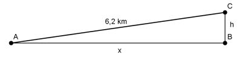

Pythagoras Aufgabe 35 Ein Fahrzeug fährt im Gebirge 6,2 km mit einer Steigung von 5 %. Berechnen Sie x und h in m.  h = 5 % von x bedeutet h = 0,05 * x 6,2 km = 6 200 m Satz von Pythagoras im Dreieck ABC: 6 200² = x² + (0,05 * x)² 38 440 000 = x² + 0,0025x² 38 440 000 = 1,0025x² | :1,0025 x² = 38 344 140 |√ x = 6192,3 m h = 0,05 * 6192,3 m = 309,6 m